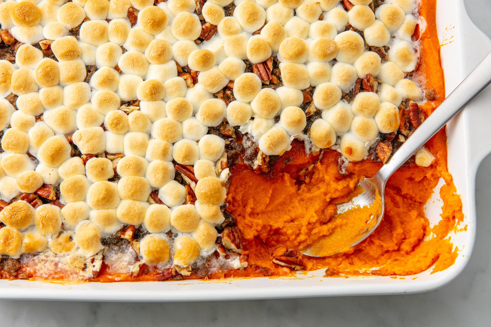

Candied Yams Recipe

Description
A side dish that is soooo good, it could cosplay as the main course tbh
Ingredients
- 1 can of sweet potatoes (29 oz.)
- 1/4 cup of butter, salted
- 1/2 cup of BROWN sugar... maybe more
- 1.5 cups of mini marshmallows (unneccesary tho)
- soul
Steps
- Preheat the oven to 400 F.
- Empty can and drain sweet potatoes. Place in a medium sized baking dish with cut up pieces of butter distributed evenly throughout. Sprinkle with brown sugar then layer with marshmallows.
- Bake for 25 minutes, OR until potatoes are tender and marshmallows have melted
- Serve.